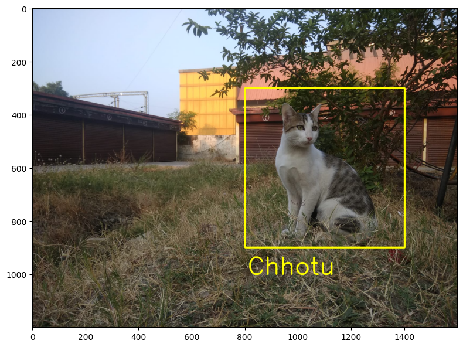
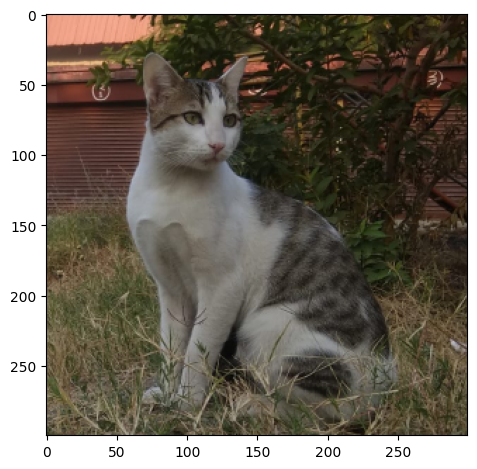
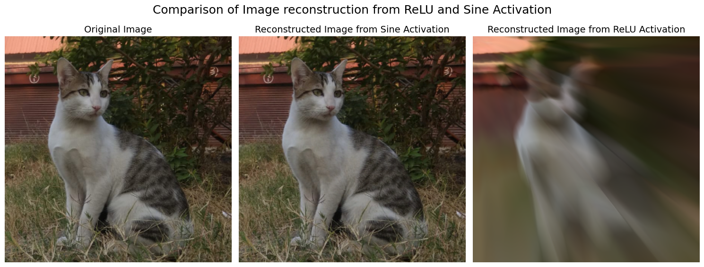
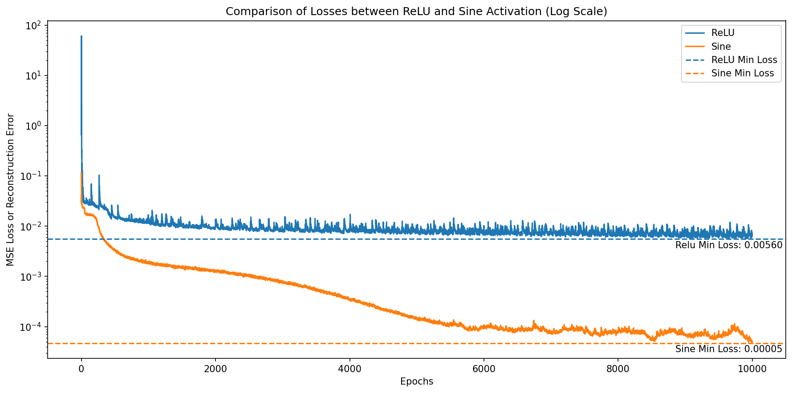

import matplotlib.pyplot as plt
import cv2 as cv
import numpy as np
import torch.nn as nn
import torch
import warnings
device = torch.device("cuda" if torch.cuda.is_available() else "cpu")
print("Device in use ", device)Device in use cudaAyush Shrivastava
November 23, 2024
This notebook is a simple demonstration of the power of the sine activation function in neural networks. We will use a nueral network to learn a function mapping that goes from pixel locations to pixel values.
In nut shell we wish to map
\[f: \mathbb{R}^2 \rightarrow \mathbb{R}^3\]
\[f(x_1, x_2) = R, G, B\]
\[\text{where } R, G, B \in [0, 1] \text{are the pixel intensities for red, green and blue channels respectively}\] \[\text{and } x_1, x_2 \in [0, 1] \text{are the pixel locations}\]
We will first use a ReLU activation function and then use a sine activation function to see the difference in the results. This demonstration is a simpler usecase of the paper SIREN: Implicit Neural Representations with Periodic Activation Functions by Vincent Sitzmann, Julien N. P. Martel, Alexander W. Bergman, David B. Lindell, Gordon Wetzstein. Available to read at https://arxiv.org/abs/2006.09661. Here is the blog post by the authors https://vsitzmann.github.io/siren/
NOTE : This notebook does not implement the SIREN architecture. It is a simple demonstration of the power of sine activation function in neural networks.
import matplotlib.pyplot as plt
import cv2 as cv
import numpy as np
import torch.nn as nn
import torch
import warnings
device = torch.device("cuda" if torch.cuda.is_available() else "cpu")
print("Device in use ", device)Device in use cudaSay Hello to my CaT!
# Read the Image
image = plt.imread('Chhotu.jpeg')
# Create a copy of the image
image_rec = image.copy()
# Draw a rectangle on the image (w1,h1) and (w2,h2)
image_rec = cv.rectangle(image_rec, (800, 300), (1400, 900), (255, 255, 0), 5)
image_rec = cv.putText(image_rec, 'Chhotu', (810, 1000), cv.FONT_HERSHEY_SIMPLEX, 3, (255, 255, 0), 5)
# Display the image
print(image_rec.shape)
plt.figure(figsize=(8, 8))
plt.imshow(image_rec)
plt.tight_layout()
plt.show()(1200, 1600, 3)
This Image is too big for my GPU to handle. So I will resize it to a smaller size of 300 \(\times\) 300 pixels.
# Crop the image
crop_image = image[300:900, 800:1400]
# Resize the image to make it smaller
crop_image = cv.resize(crop_image, (300, 300))
# Normalize the image to be in the range [0, 1]
crop_image = crop_image/255.0
print(crop_image.shape)
plt.imshow(crop_image)
plt.tight_layout()
plt.show()(300, 300, 3)
We basically wish to create a dataset to train our neural network. The input to the neural network will be the pixel location and the output will be the pixel value. We will create a coordinate map of the image. The coordinate map will have the shape (\(Height \times Width\), 2) and Output will have the shape (\(Height \times Width\), 3).
\[\text{Input Coordinate Map to Neural Network} = \begin{bmatrix} x_1, y_1 \\ x_2, y_2 \\ \vdots \\ x_n, y_n \end{bmatrix} \text{,where } x_i, y_i \text{ are the pixel locations}\]
\[\text{Output Pixel Values} = \begin{bmatrix} R_1, G_1, B_1 \\ R_2, G_2, B_2 \\ \vdots \\ R_n, G_n, B_n \end{bmatrix} \text{,where } R_i, G_i, B_i \text{ are the pixel intensities}\]
Let have a look at what exactly the coordinate map looks like.
We will train a simple neural network with ReLU activation function to learn the mapping from pixel locations to pixel values. We will use the Adam optimizer and Mean Squared Error loss function.
\[ Neural Network(x_i, y_i) = \begin{bmatrix} R_i, G_i, B_i \end{bmatrix}\]
All the layers in the neural network will have ReLU activation function except the last layer which will have a linear activation function.
# Create a MLP with 5 hidden layers.
# Input is (x, y) and output is (r, g, b)
class MLP(nn.Module):
def __init__(self):
super().__init__()
self.fc1 = nn.Linear(2, 256)
self.fc2 = nn.Linear(256, 512)
self.fc3 = nn.Linear(512, 512)
self.fc4 = nn.Linear(512, 512)
self.fc5 = nn.Linear(512, 256)
self.fc6 = nn.Linear(256, 3)
def forward(self, x):
x = nn.functional.relu(self.fc1(x))
x = nn.functional.relu(self.fc2(x))
x = nn.functional.relu(self.fc3(x))
x = nn.functional.relu(self.fc4(x))
x = nn.functional.relu(self.fc5(x))
return self.fc6(x)# Training loop function to train the model
# X: (num_xy, 2) tensor of (x, y) coordinates
# y: (num_xy, 3) tensor of (r, g, b) pixel values
# model: MLP model
# lr: learning rate
# epochs: number of epochs to train for
# bs: batch size
# print_every: print loss every print_every epochs
# Logs losses
# Saves the prediction frmo model every print_every epochs
def train(X, y, model, lr=0.01, epochs=1000, bs=1000, print_every=100):
"""
Model Trainer : Trains the model
Parameters:
X : (num_xy, 2) tensor of (x, y) coordinates
y : (num_xy, 3) tensor of (r, g, b) pixel values
model : MLP model
lr : learning rate
epochs : number of epochs to train for
bs : batch size
print_every : print loss every print_every epochs
Returns:
losses : list of losses
imgs : list of images predicted by the model every print_every epochs
"""
losses = []
imgs = []
optimizer = torch.optim.Adam(model.parameters(), lr=lr)
criterion = nn.MSELoss()
for epoch in range(epochs):
optimizer.zero_grad()
# chosing some random indexes to train the model
idx = np.random.choice(X.shape[0], bs)
X_batch = torch.tensor(X[idx], dtype=torch.float32).to(device)
y_batch = torch.tensor(y[idx], dtype=torch.float32).to(device)
y_pred = model(X_batch)
loss = criterion(y_pred, y_batch)
loss.backward()
optimizer.step()
losses.append(loss.item())
if epoch % print_every == 0:
print(f'Epoch {epoch}, Loss: {loss.item()}')
imgs.append(model(torch.tensor(X, dtype=torch.float32).to(device)).detach().cpu().numpy())
return losses, imgs
def plot_image(model, name=None):
"""
Plot the image predicted by the model
"""
# Predict the (r, g, b) values
pred_y = model(torch.tensor(X, dtype=torch.float32).to(device))
# Reshape the predictions to be (3, height, width)
pred_y = pred_y.transpose(0, 1).reshape(channels, height, width)
# plot the image
plt.imshow(pred_y.permute(1, 2, 0).detach().cpu())
if name:
plt.savefig(name)MLP_model = MLP()
MLP_model.to(device)
relu_losses, relu_imgs = train(X,Y,
MLP_model, lr=0.001, epochs=10000, bs=5000, print_every=1000)Epoch 0, Loss: 0.6576557755470276
Epoch 1000, Loss: 0.0114674037322402
Epoch 2000, Loss: 0.012357354164123535
Epoch 3000, Loss: 0.008751491084694862
Epoch 4000, Loss: 0.008101350627839565
Epoch 5000, Loss: 0.007827701978385448
Epoch 6000, Loss: 0.010159682482481003
Epoch 7000, Loss: 0.008207915350794792
Epoch 8000, Loss: 0.007177131250500679
Epoch 9000, Loss: 0.006437341216951609We will train a simple neural network with ReLU activation function to learn the mapping from pixel locations to pixel values. We will use the Adam optimizer and Mean Squared Error loss function.
\[ Neural Network(x_i, y_i) = \begin{bmatrix} R_i, G_i, B_i \end{bmatrix}\]
All the layers in the neural network will have Sine activation function except the last layer which will have a linear activation function.
# Create a MLP with 5 hidden layers with 256 neurons each and sine activations.
# Input is (x, y) and output is (r, g, b)
class MLP_sin(nn.Module):
def __init__(self):
super().__init__()
self.fc1 = nn.Linear(2, 256)
self.fc2 = nn.Linear(256, 512)
self.fc3 = nn.Linear(512, 512)
self.fc4 = nn.Linear(512, 512)
self.fc5 = nn.Linear(512, 256)
self.fc6 = nn.Linear(256, 3)
def forward(self, x):
x = torch.sin(self.fc1(x))
x = torch.sin(self.fc2(x))
x = torch.sin(self.fc3(x))
x = torch.sin(self.fc4(x))
x = torch.sin(self.fc5(x))
return self.fc6(x)sin_model = MLP_sin()
sin_model.to(device)
sin_losses, sin_imgs = train(X,Y,
sin_model, lr=0.001, epochs=10000, bs=5000, print_every=1000)Epoch 0, Loss: 0.11556914448738098
Epoch 1000, Loss: 0.0018598262686282396
Epoch 2000, Loss: 0.001261448604054749
Epoch 3000, Loss: 0.0007661026320420206
Epoch 4000, Loss: 0.00033592403633520007
Epoch 5000, Loss: 0.00014680986350867897
Epoch 6000, Loss: 9.029130887938663e-05
Epoch 7000, Loss: 8.067893941188231e-05
Epoch 8000, Loss: 8.20108616608195e-05
Epoch 9000, Loss: 7.174971688073128e-05plt.figure(figsize=(15, 6))
plt.subplot(1, 3, 1)
plt.imshow(crop_image)
plt.title('Original Image', fontsize=14)
plt.axis('off')
plt.subplot(1, 3, 2)
plot_image(sin_model)
plt.title('Reconstructed Image from Sine Activation', fontsize=14)
plt.axis('off')
plt.subplot(1, 3, 3)
plot_image(MLP_model)
plt.title('Reconstructed Image from ReLU Activation', fontsize=14)
plt.axis('off')
plt.suptitle('Comparison of Image reconstruction from ReLU and Sine Activation', fontsize=18)
plt.tight_layout()
plt.show()
plt.figure(figsize=(12, 6),dpi=150)
plt.plot(relu_losses, label='ReLU')
plt.plot(sin_losses, label='Sine')
plt.axhline(np.min(relu_losses), color='C0', linestyle='--', label='ReLU Min Loss')
plt.axhline(np.min(sin_losses), color='C1', linestyle='--', label='Sine Min Loss')
plt.annotate(f'Relu Min Loss: {np.min(relu_losses):.5f}', (len(relu_losses)-1, np.min(relu_losses)), textcoords="offset points", xytext=(-25,-10), ha='center')
plt.annotate(f'Sine Min Loss: {np.min(sin_losses):.5f}', (len(sin_losses)-1, np.min(sin_losses)), textcoords="offset points", xytext=(-25,-10), ha='center')
plt.xlabel('Epochs')
plt.ylabel('MSE Loss or Reconstruction Error')
plt.yscale('log') # Set y-axis to log scale
plt.legend()
plt.title('Comparison of Losses between ReLU and Sine Activation (Log Scale)')
plt.tight_layout()
plt.show()

The sine activation function is a powerful activation function that can be used in neural networks to learn complex mappings. Sine converges faster than ReLU activation function and demonstrates better results in image reconstruction tasks.